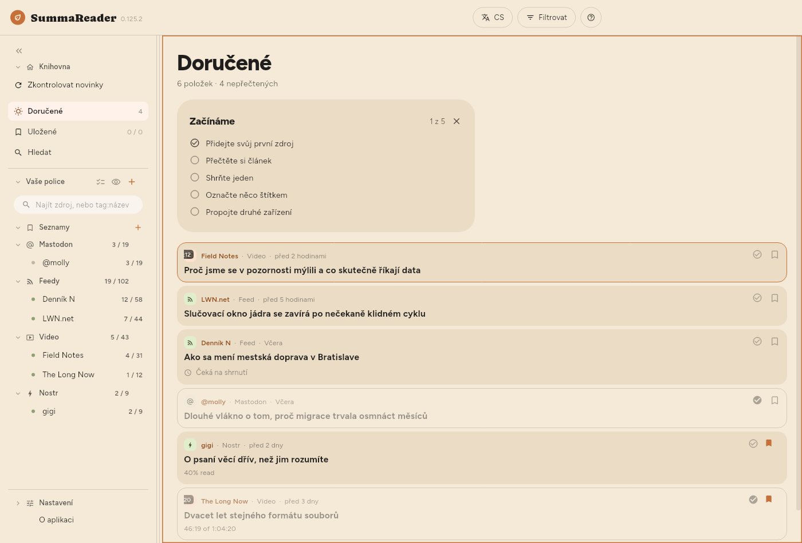
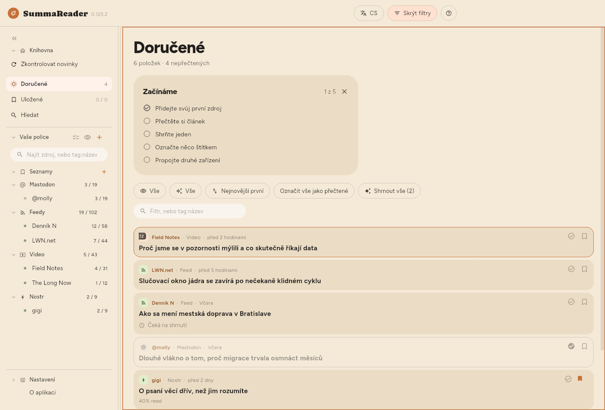

← Začínáme · Obsah · Čtení →
Okno

Horní lišta
| Ovládací prvek | Co dělá |
|---|---|
| EN | Jazyk rozhraní |
| Filtrovat | Ukáže a skryje panel filtrů |
| ? | Nápověda k tomu, co je na obrazovce |
Filtrovat se objeví, když je na obrazovce seznam — tedy i při čtení článku vedle něj. Tlačítko se vyplní a nese nápis Filtrováno, kdykoli seznam něco zužuje, takže seznam, který ukazuje jen část sebe, vždy řekne proč. V telefonu otevírá polici ☰ a Filtrovat je tlačítko vedle ?.
Police
Vlevo shora dolů: Knihovna s tlačítkem Zkontrolovat novinky, Doručené, Uložené a Hledat, pak Vaše police s vašimi Seznamy a kanály seskupenými podle druhu, a dole Nastavení. Každý kanál ukazuje nepřečtené / celkem; každý seznam ukazuje, kolik obsahuje. V telefonu je police výsuvný panel, který otevřete ☰.
- Zkontrolovat novinky stáhne hned všechny zdroje.
- Pole nahoře zužuje jen polici a nic jiného: část názvu kanálu, nebo
tag:a část štítku. Část stačí, takžetag:gamnajdegamingiretro-gaming— a krátké slovo zabere hodně, protožetag:ainajde i kanál se štítkemretaila!tag:aiho skryje. Textové pole v panelu filtrů chce celý štítek. - Kliknutím na kanál uvidíte jen ten kanál.
- Kliknutím na seznam uvidíte, co je v něm — viz Uchovávání.
- Vybrat více (zaškrtávátka vedle Vaše police) nebo dlouhé stisknutí řádku ukáže u každého kanálu ozubené kolo. To otevře vlastní panel kanálu — viz Správa zdrojů.
- Oko vedle + skryje každý kanál, ve kterém nic nečeká.
- « sbalí polici na pruh ikon. Totéž udělá
b.
Panel filtrů
Stiskněte Filtrovat. Je tu vše, co rozhoduje o tom, co seznam ukazuje, a ve výchozím stavu je panel zavřený, takže první věc pod nadpisem je první článek.


| Ovládací prvek | Co dělá |
|---|---|
| Nepřečtené / Přečtené / Vše | Které položky ukázat |
| Vše / Shrnuté / Neshrnuté | Zda existuje shrnutí |
| Nejnovější první | Řazení — stisknutím projdete šest možností |
| Označit vše jako přečtené | Označí vše, co filtr zahrnuje |
| Shrnout vše | Shrne vše, co filtr zahrnuje |
| Čipy druhů | Videa, kanály, příspěvky — kliknutím zúžíte |
| Textové pole | Najde slovo v názvu, zdroji nebo shrnutí, nebo tag:nazev |
Řazení se točí dokola: Nejnovější první → Nejstarší první → Název A–Z → Název Z–A → Kanál A–Z → Kanál Z–A a znovu od začátku.
Filtr přečtených, filtr shrnutých a řazení si aplikace pamatuje mezi spuštěními. Výběr kanálu ne — to je navigace, a když se aplikace otevře s knihovnou zúženou na kanál, který jste vybrali minulý týden, vypadá prázdná.
Počty pod „Doručené“
Zobrazeno 18 z 5 878 · 52 nepřečtených · 812 ke shrnutí
- Zobrazeno se objeví, jen když něco zužuje filtr, a počítá řádky, které jsou opravdu na obrazovce.
- ke shrnutí je stejné číslo jako na tlačítku Shrnout a odpovídá tomu, co by jeho stisknutí udělalo.
Jak seznam vypadá
| Nastavení | Kde |
|---|---|
| Velikost písma | Nastavení › Základní › Vzhled › Text › Velikost písma |
| Hustota seznamu | Nastavení › Základní › Vzhled › Seznam › Hustota seznamu |
| Souhrn v seznamu | Nastavení › Základní › Vzhled › Seznam › Souhrn v seznamu |
| Náhledy | Nastavení › Základní › Vzhled › Seznam › Náhledy |
| Řádkování, Šířka sloupce | Nastavení › Základní › Vzhled › Článek |
| Kde je článek umístěn | Nastavení › Základní › Vzhled › Rozvržení |
| Seskupit podle zdroje | Nastavení › Základní › Vzhled › Seznam › Seskupit podle zdroje |
Hustota seznamu určuje, kolik z každé položky seznam vykreslí:
| Shrnutí | Název | Obrázek | |
|---|---|---|---|
| Pohodlná | zobrazeno | zalamuje se volně | velký |
| Kompaktní (výchozí) | — | dva řádky | malý |
| Hustá | — | jeden řádek | žádný |
Při volbě Pohodlná nastavuje Souhrn v seznamu (Nastavení › Základní › Vzhled › Seznam › Souhrn v seznamu), kolik z každého souhrnu řádek ukáže: 2 řádky, 4 řádky nebo Celý souhrn (výchozí). Článek, který ještě nemá souhrn, ukáže na stejném místě, slaběji a se stejným omezením, svůj začátek: vlastní popis ze zdroje, jinak první slova textu článku. Řádek je vidět jen při volbě Pohodlná, protože Kompaktní a Hustá žádný souhrn neukazují.
Náhledy: Obrázek ukáže u každého článku jeho vlastní obrázek místo ikony druhu. Jako jediná ze tří možností něco stojí: obrázky se stahují po několika pro řádky na obrazovce, takže dlouhý seznam se doplňuje postupně, ne celý najednou. Hustá toto nastavení ignoruje — obrázek je vysoký tři řádky, a to husté není.
← Začínáme · Obsah · Čtení →